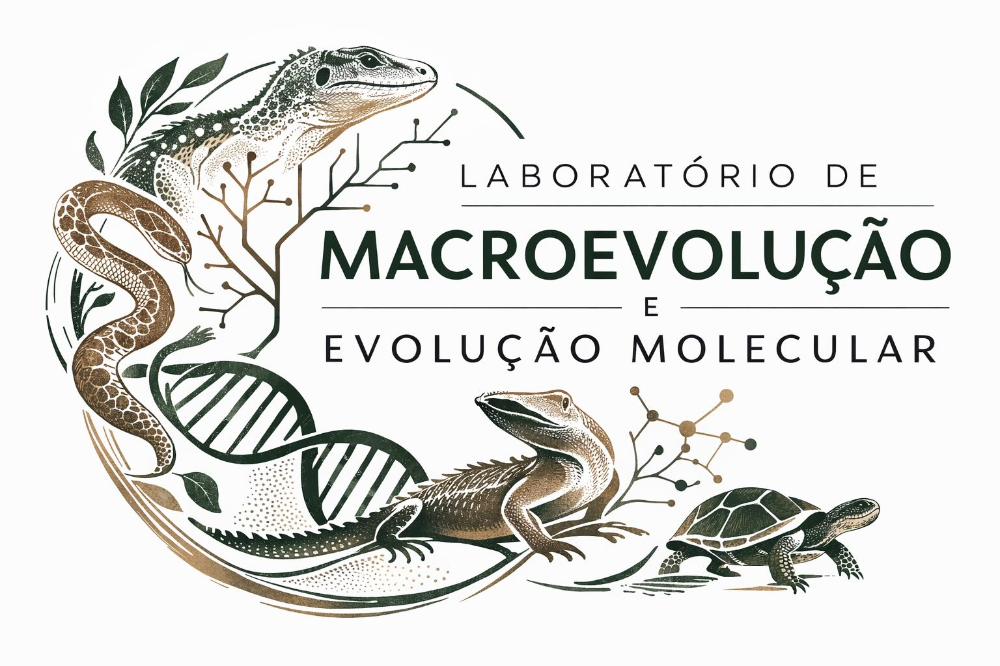

A história geográfica da América do Sul torna a evolução de sua diversidade faunística atraente para testar hipóteses de macroecologia e biogeografia. Há dois períodos de colonização bem estabelecidos da massa terrestre sul-americana: um no período Eoceno/Oligoceno e outro no Mioceno superior/Plioceno, associado ao Grande Intercâmbio Biótico Americano (GABI).
Este projeto visa investigar a biogeografia histórica e os processos de diversificação dos vertebrados terrestres relacionados com a ocupação da América do Sul. Utilizando uma abordagem integrativa que combina dados fósseis, modelos filogenéticos e ferramentas analíticas avançadas, o estudo buscará identificar padrões evolutivos relacionados à colonização do continente por diferentes grupos taxonômicos.
O projeto conta com três linhas de pesquisa:
1. Avaliando a Sincronia na Colonização da América do Sul — busca identificar se a colonização do continente por diferentes grupos ocorreu de forma sincrônica.
2. Dinâmica macroevolutiva com filogenias moleculares — estima taxas de especiação/extinção, mudanças nas taxas de diversificação e evolução morfológica ao longo do tempo.
3. Integração de fósseis e filogenias — reconstrói a cronologia da colonização e dispersão na América do Sul.
Vagas abertas para alunos de iniciação científica e mestrado, com possibilidade de bolsa.
Enviar breve carta de interesse para: anieligpereira@gmail.com